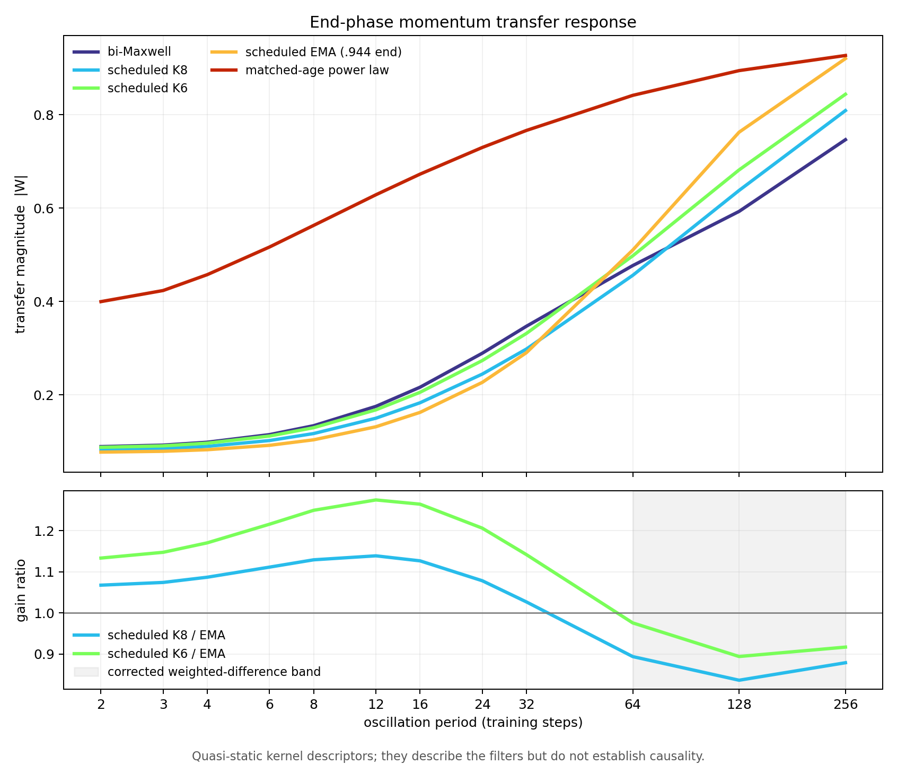

Toward a principled theory of momentum
What the NanoGPT kernel experiments actually established, why the scalar edge-of-stability story is breaking under Muon, and the shortest path from expressive K-Maxwell kernels to a zero- or one-knob rule.
Codex synthesis · 29 August 2026 · discovery-stage evidence, not a final benchmark claim
1. The empirical decomposition
| Momentum rule | hardware | validation loss | gain over matched bi-Maxwell |
|---|---|---|---|
| bi-Maxwell control | 2×H100 SXM | 3.27547 | — |
| scheduled one-pole EMA, best matched H100 | 2×H100 SXM | 3.27449 | +0.00098 |
| scheduled K6 | 2×H100 SXM | 3.27261 | +0.00286 |
| scheduled K8 | 2×H100 SXM | 3.27250 | +0.00297 |
| scheduled matched-age power law | 8×A100 | 3.29123 | −0.01287 |
These are local discovery measurements: one seed and one checkpoint fork per row, not a statistical-significance fleet. The roughly one-third fraction is stack-sensitive: the corresponding A100 EMA gain was +0.00068 on its own control, smaller than the H100 estimate. Treat the fraction as scale, not a precise attribution. The power-law row uses its separate matched A100 control (3.27836) and is not part of the one-third arithmetic.
A scheduled single EMA recovers roughly one third of the K-Maxwell gain. Scheduling memory is therefore real and useful, but it is not the whole story. K6 and K8 tying tells us that raw parameter count is not the valuable ingredient either.
The defensible conclusion is one-pole insufficiency. We have not yet separated higher-order frequency shape from the path through kernel space or from momentum-state initialization. Calling the remaining two-thirds a pure “shape gain” would outrun the experiment.
2. What differs between the filters?

K6/K8 and the scheduled EMA have broadly similar mean age, flip gain, and total noise gain. Their remaining difference is a modest shoulder across intermediate periods and less transmission of ultra-slow history. The first end-phase spectrum-weighted analysis places most of the corrected K8-versus-EMA difference around periods 64–256, with the largest contributions at 128 and 256. The separate early-phase ladder becomes unphysical beyond period 12 and cannot localize the switch phase; it does not invalidate the end-phase long-period result.
The tested power law is different in a much less subtle way. Even after matching mean age, it transmits roughly four to six times more period-two content and six to nine times more total noise than the EMA comparator. Its failure is consistent with presenting Muon a badly contaminated pre-polar matrix. That is a diagnosis, not yet a causal proof.
3. Why the old scalar stability story is inadequate
For a linear optimizer on a scalar quadratic, a causal kernel W produces the characteristic equation
The first unit-circle crossing is the stability boundary; a period-two crossing gives the familiar expression involving W(−1). This is the correct generalization of the classical single-momentum calculation.
Muon inserts a nonlinear map between the filtered gradient and the update:
Its local dynamics depend on the Jacobian of the Newton–Schulz/polar map, composed with the Hessian and all momentum states. A raw per-layer Hessian eigenvalue times learning rate is therefore not the closed-loop stability variable.
4. The key geometric fact
For the exact polar factor, perturbations that only change represented singular values are annihilated. Rotations between singular directions are weighted by denominators of the form σi + σj. The finite Newton–Schulz map smooths this behavior, but the implementation explicitly normalizes by Frobenius norm and remains nearly scale-invariant.
This supplies a concrete interpretation of two otherwise awkward facts:
- Momentum-free Muon changes W(−1) by about eleven-fold without the inverse sharpness response predicted by a scalar flip boundary. Its weight norms are only about 0.31× the record’s, however, so this remains a cross-trajectory screen rather than an identified kernel effect.
- The useful K-Maxwell residual lives in a broad relative-frequency shape that scalar summaries such as mean age and W(−1) cannot represent.
The period-two amplitude screen also rejected Fable’s earlier step-size-pinned polar toy: amplitude scaled approximately as η2.4, not η1. These comparisons are cross-trajectory and confounded, so they reject simple stories more strongly than they establish the replacement.
5. A principled problem statement
Choose the lowest-order stable causal filter W that optimizes expected local progress after Muon’s norm-selection map while keeping the augmented closed loop stable:
The measurable state should include the pre-NS singular spectrum, lagged gradient cross-covariance in the transmitted tangent directions, learning rate, and generalized curvature of the composed Muon map. A scalar temporal PSD is not sufficient because it forgets whether frequency components occupy the same matrix subspace and compete.
The target implementation is not “learn a beta schedule.” It is a minimal controller—possibly a normalized two-timescale shelf—whose single knob is a physical margin or cross-band competition setpoint estimated online.
6. The one experiment worth running next
Use one common checkpoint and a shared, already-warmed EMA basis. Hold the weights, data order, learning rate, weight decay, Adam state, and all common optimizer state fixed. Run two identical controls plus two kernels that match DC gain, mean age, W(−1), and approximately total noise gain at the checkpoint’s realized finite-history age, while differing maximally across periods 64–256. Before registration, solve an explicit feasible pair, report its achieved noise-gain tolerance, and bound descriptor drift over the first measurement window.
A branch counts as separated only if its effect exceeds the divergence between the two controls over the same window.
- Immediate response also moves an unaltered band’s subspace share: cross-mode competition survives. Compress the response to the minimum-order state-driven shelf controller.
- Immediate response is confined to the altered band: frequency-selective transmission matters, but cross-mode competition is not identified. The controller target should be that band’s own response, not a competition ratio.
- Only delayed validation/sharpness separates: local filtering is insufficient; momentum acts through slower trajectory or basin regularization.
- No separation: reject the proposed slow-band mechanism and revisit initialization/path effects or richer matrix-valued structure.
No branch is allowed to become a post-hoc success. The outcome map is fixed before launch, and the experiment remains a proposal pending approval.
7. What we should stop doing
- Dense beta/gamma sweeps and schedule gardening.
- Treating ηλ or W(−1) as a universal Muon “drive.”
- Calling fixed-history kernel replay causal.
- Designing a one-pole rule before the data establish that one pole can represent the useful response.
- Claiming the hybrid Muon+Adam system is understood from isolated Muon Hessian blocks.
8. Epistemic status
The temporal spectral-mixer model is an unrefuted candidate, not a conclusion. It was constructed after seeing the discovery evidence. The same-state intervention is required before turning it into an optimizer design principle. If it survives, the research program has a plausible route from arbitrary K-Maxwell weights to a small controller derived from measurable state. If it fails, that failure is informative: the useful state is slower or more structured than a local temporal filter can capture.